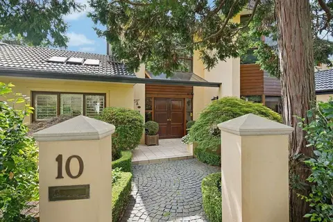
10 Hawthorne Avenue, Chatswood, sold by Alex Banning for $4,025,000
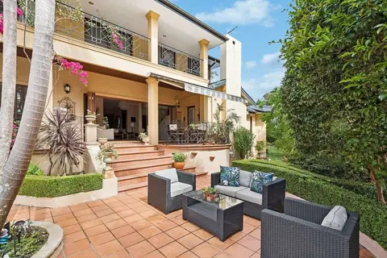
10 Hawthorne Avenue, Chatswood, sold by Alex Banning for $4,025,000
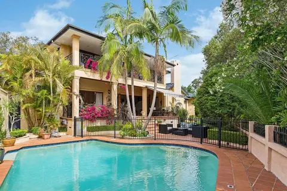
10 Hawthorne Avenue, Chatswood, sold by Alex Banning for $4,025,000
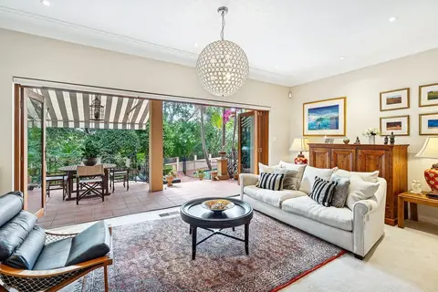
10 Hawthorne Avenue, Chatswood, sold by Alex Banning for $4,025,000
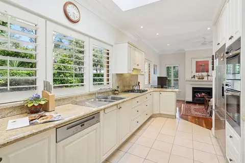
10 Hawthorne Avenue, Chatswood, sold by Alex Banning for $4,025,000
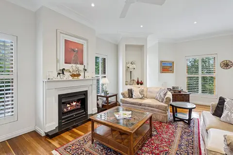
10 Hawthorne Avenue, Chatswood, sold by Alex Banning for $4,025,000
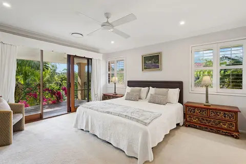
10 Hawthorne Avenue, Chatswood, sold by Alex Banning for $4,025,000
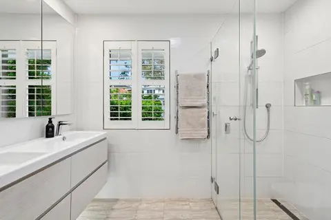
10 Hawthorne Avenue, Chatswood, sold by Alex Banning for $4,025,000
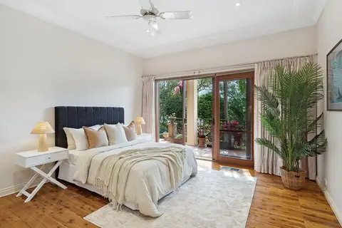
10 Hawthorne Avenue, Chatswood, sold by Alex Banning for $4,025,000
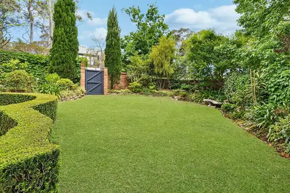
10 Hawthorne Avenue, Chatswood, sold by Alex Banning for $4,025,000
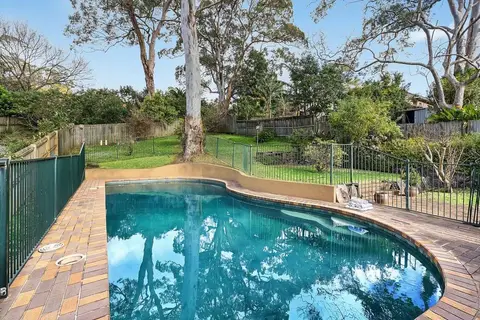
Pool at 42 Sharland Avenue, Chatswood, offered off market by Alex Banning
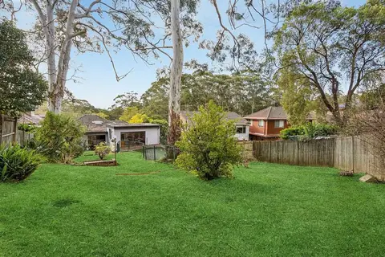
Rear garden at 42 Sharland Avenue, Chatswood, offered off market by Alex Banning
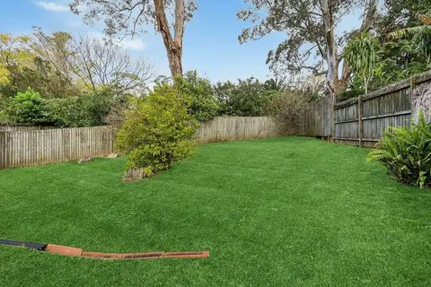
Rear yard at 42 Sharland Avenue, Chatswood, offered off market by Alex Banning
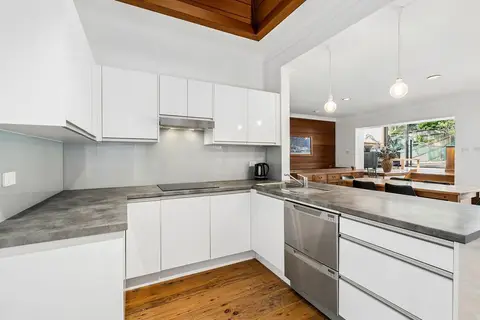
Kitchen at 42 Sharland Avenue, Chatswood, offered off market by Alex Banning
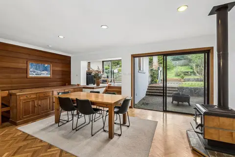
Dining room at 42 Sharland Avenue, Chatswood, offered off market by Alex Banning
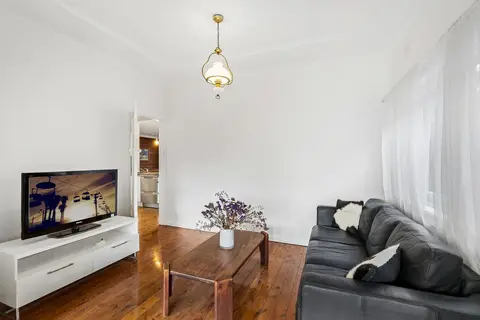
Living room at 42 Sharland Avenue, Chatswood, offered off market by Alex Banning
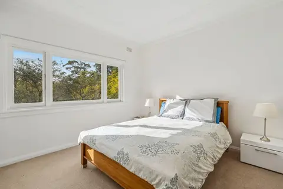
Bedroom at 42 Sharland Avenue, Chatswood, offered off market by Alex Banning
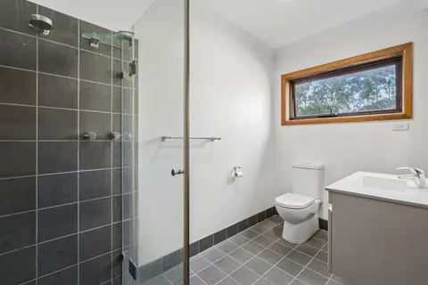
Bathroom at 42 Sharland Avenue, Chatswood, offered off market by Alex Banning
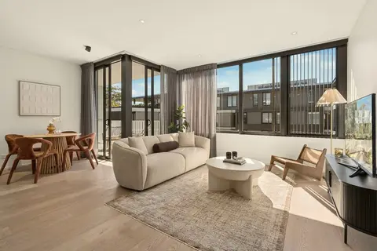
Living room at 205/15 Finlayson Street, Lane Cove, sold by Alex Banning
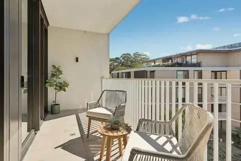
Balcony at 205/15 Finlayson Street, Lane Cove
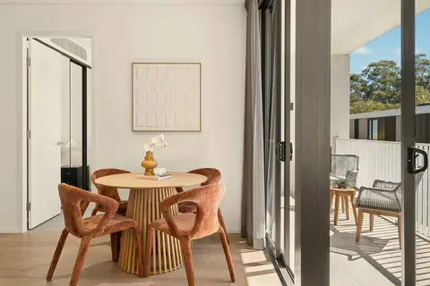
Dining room at 205/15 Finlayson Street, Lane Cove
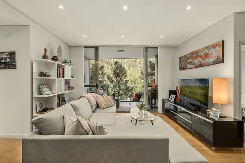
Living room at 204/76-82 Gordon Crescent, Lane Cove, sold by Alex Banning
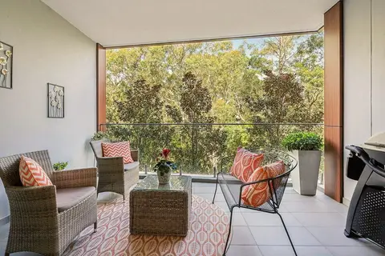
Balcony at 204/76-82 Gordon Crescent, Lane Cove
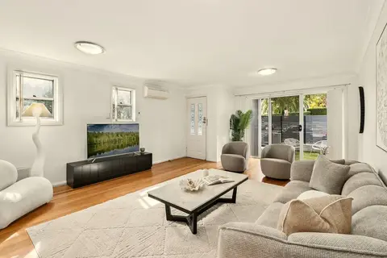
Living room at 2/6 Parklands Avenue, Lane Cove, sold at auction by Alex Banning
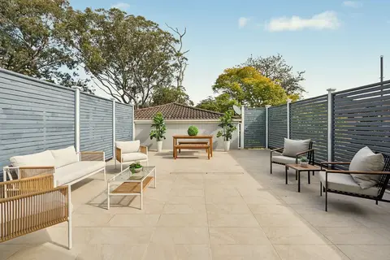
Rear garden at 2/6 Parklands Avenue, Lane Cove
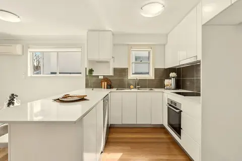
Kitchen at 2/6 Parklands Avenue, Lane Cove
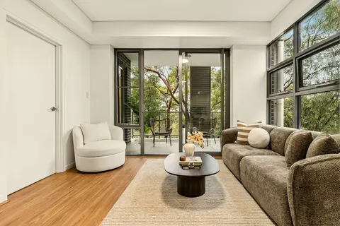
Living room at 67/15-21 Mindarie Street, Lane Cove, sold by Alex Banning
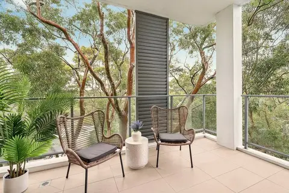
Balcony at 67/15-21 Mindarie Street, Lane Cove
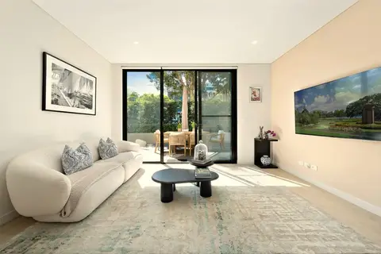
G09/28 Mindarie Street, Lane Cove, a garden residence sold by Alex Banning for $1,700,000
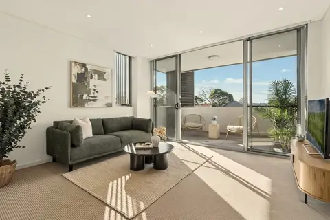
Living room at 307/544-550 Mowbray Road, Lane Cove, sold by Alex Banning
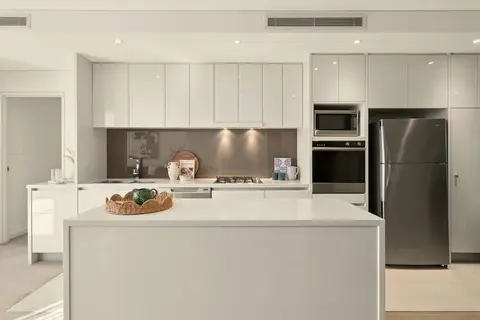
Kitchen at 307/544-550 Mowbray Road, Lane Cove
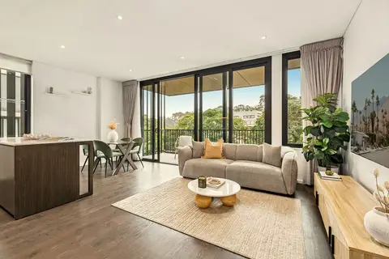
Living room at 307/2 Birdwood Avenue, Lane Cove, for sale with Alex Banning
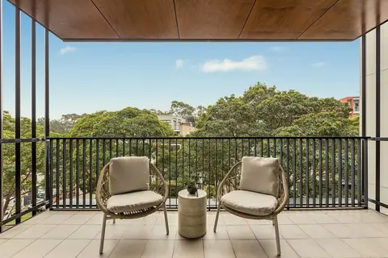
Balcony at 307/2 Birdwood Avenue, Lane Cove
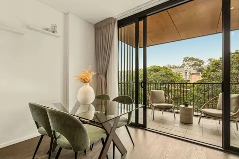
Dining room at 307/2 Birdwood Avenue, Lane Cove
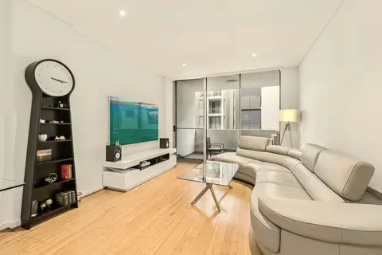
Living room at 408C/7-13 Centennial Avenue, Lane Cove, for sale with Alex Banning
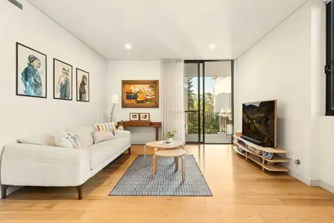
40/3-9 Finlayson Street, Lane Cove, for sale with Alex Banning
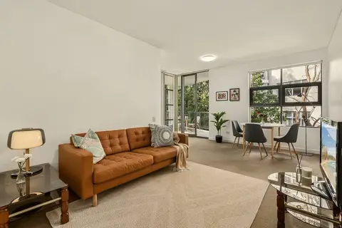
Living room at 63/15-21 Mindarie Street, Lane Cove, for sale with Alex Banning
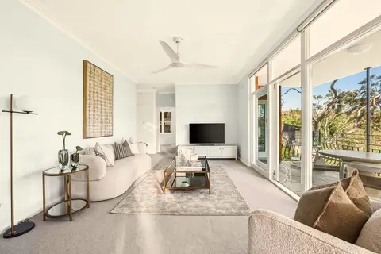
2/34 Tobruk Avenue, Cremorne, sold by Alex Banning for $2,330,000
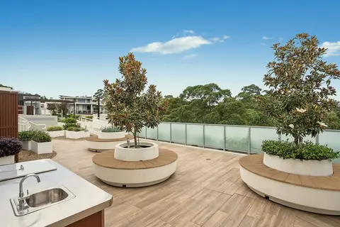
404B/84 Gordon Crescent, Lane Cove, sold by Alex Banning
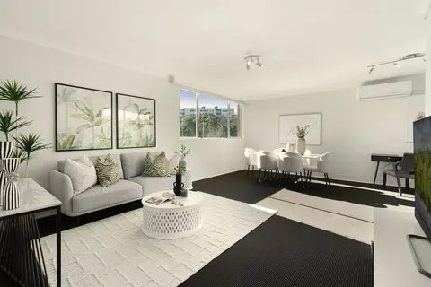
60/302 Burns Bay Road, Lane Cove, sold by Alex Banning
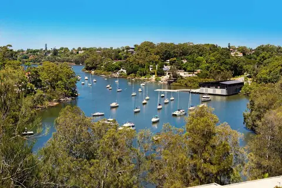
55/300A Burns Bay Road, Lane Cove, sold by Alex Banning
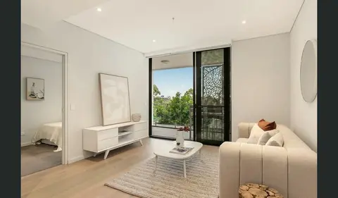
219/15 Willandra Street, Lane Cove, sold by Alex Banning
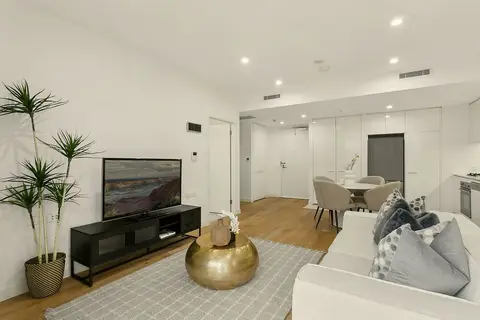
406/10 Waterview Drive, Lane Cove, sold by Alex Banning
Alex Banning, Partner Agent and Director, Raine & Horne Lower North Shore
Alex Banning on a leafy Lower North Shore street
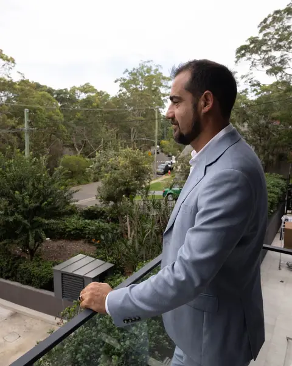
Alex Banning on a balcony overlooking a leafy Lane Cove street